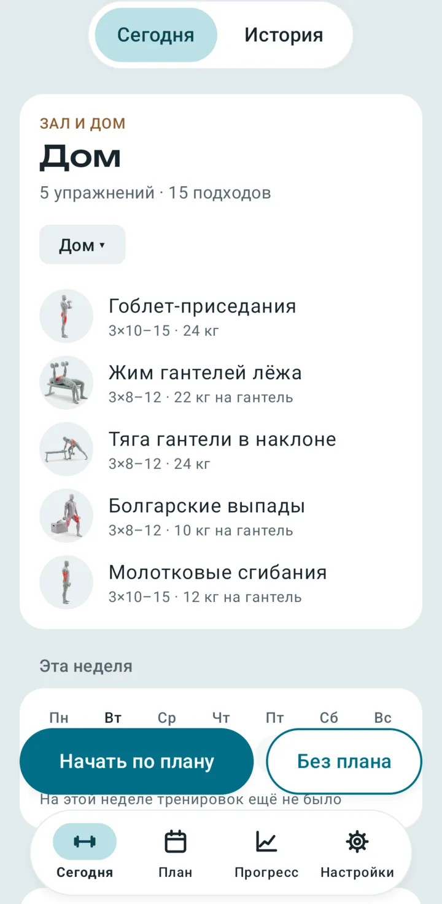
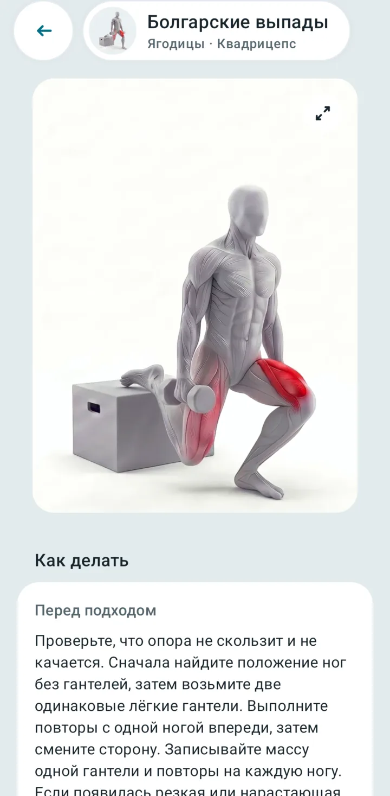
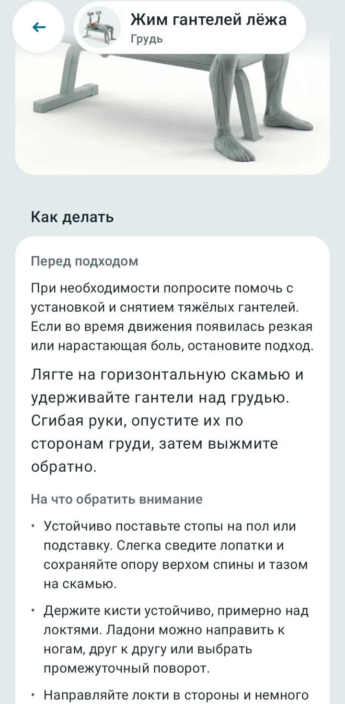
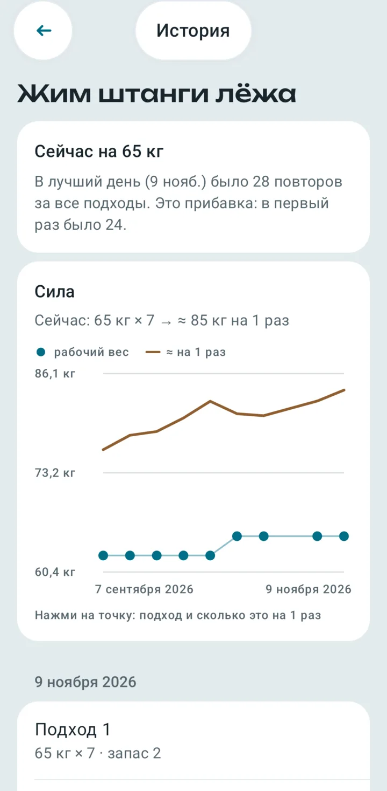

Тренируйтесь по плану и понимайте, что растёт
Печора собирает план под ваше оборудование, подсказывает вес на каждый подход, показывает, как делать упражнение, и честно отвечает, хватает ли мышцам работы и растёт ли сила.
- Бесплатно, без рекламы
- Без регистрации
- Дневник хранится на телефоне
- Зал и дом в одном плане


Как делать, видно сразу
У упражнений есть короткий ролик движения, где подсвечены работающие мышцы, и подсказки: что проверить перед подходом и на что обратить внимание во время него.
- Ролик открывается со страницы упражнения и из тренировки
- Ориентиры без мифов и громких обещаний
- Больше 150 упражнений, поиск по мышцам и оборудованию

Подход записывается одной рукой
Следующий подход уже подсказан: по лучшей из двух прошлых тренировок и на повтор больше. Остаётся поправить числа и отметить, сколько ещё могли. Таймер отдыха запускается сам.
- Рядом с каждым подходом видно, сколько было в прошлый раз
- Подход вышел тяжелее плана? Рядом появится другой вес, его берут одним нажатием
- Для гантелей вес одной гантели, для эспандера сам эспандер
- Нет нужного снаряда? Замена подберётся из того, что есть

План под ваш зал и ваш дом
Выберите, сколько раз в неделю тренируетесь, и Печора сразу предложит, как делить дни, и соберёт план из того оборудования, что у вас есть. Цель, место и опыт можно поменять тут же. Хотите выбрать упражнения сами? Возьмите только каркас дней. Потом план можно поправить как угодно.
- У каждого дня своё место: в зале штанга, дома гантели
- Прибавку подскажет двойная прогрессия: сначала повторы, потом вес
- Можно и без плана: просто записывать подходы


Что получат мышцы, видно ещё до тренировки
Прямо в редакторе программы видно, сколько подходов в неделю получит каждая мышца и из каких дней они сложатся. Где в норме, а где мало, понятно по цвету. Нажмите на мышцу, чтобы добавить ей подходов, или на день, чтобы открыть его.

Два простых вопроса и честные ответы
Вместо стены графиков прогресс отвечает на вопросы, ради которых вообще ведут дневник. На каждом экране есть значок «i»: там написано, как посчитаны числа и почему им можно верить.



Дневник остаётся у вас
Печора работает без аккаунта и без нашего сервера. Дневник хранится на устройстве, его можно выгрузить в файл и восстановить из резервной копии.
Политика конфиденциальностиРезервная копия на Google Диске
По вашему выбору Печора сохраняет копию дневника в выбранном аккаунте Google. Для этого приложение запрашивает доступ к файлам, используемым с приложением, и адрес аккаунта.
Подключение необязательно. Его можно отключить в настройках приложения.
Как пользоваться Печорой
По шагам: места, план, тренировка и прогресс на примере «два дня в зале, один дома».